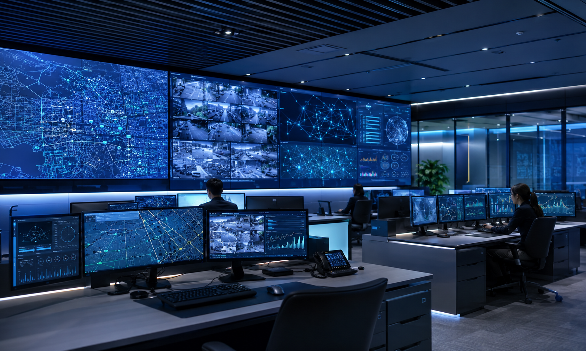

Connecting Safetyto Every Moment
에스에이씨솔루션은 재난의 순간부터 일상의 공간까지,
사람과 정보를 더 빠르고 안전하게 연결하는 기술을 만듭니다.
현장에 꼭 필요한 시스템이 신뢰할 수 있는 안전으로 이어지도록 함께하겠습니다.
Business & Solution
현장에 필요한 시스템을
하나의 흐름으로 연결합니다
방송·통신 하드웨어와 소프트웨어를 통합해 안전성, 운영 효율, 신속한 대응을 함께 확보합니다.
전체 솔루션 보기

Core Technology
경보를 놓치지 않는
즉시 방송 기술
경보 수신 직후 우선방송을 시작하고 기존 전관방송 시스템이 준비되면 자동 전환합니다. 회선과 장비 상태까지 지속적으로 확인합니다.
기술·특허 정보 보기System Architecture재난경보 즉시 방송 시스템
- 01경보 수신
유무선 네트워크로 표준 경보 정보 수신
- 02SAC 경보 단말
수신 정보 확인 및 방송 제어 신호 생성
- 03우선방송
내장 앰프와 우선 스피커로 즉시 안내
- 04자동 전환
기존 전관방송 기동 후 방송 경로 전환
- 05상태 모니터링
앰프 출력과 스피커 회선 이상 감시
Project Process
현장 분석부터 운영 지원까지
구축 전 과정을 함께합니다
시설 환경과 기존 설비를 먼저 파악하고, 필요한 시스템을 설계·연동한 뒤 안정적인 운영을 지원합니다.
- 01 / ANALYZE
현장 분석
시설 유형, 운영 환경, 기존 설비와 필요한 대응 범위를 확인합니다.
- 02 / DESIGN
통합 설계
방송·통신·관제 설비와 네트워크의 구성 및 연동 방식을 설계합니다.
- 03 / BUILD
구축·연동
현장 조건에 맞춰 장비를 구축하고 개별 시스템을 하나의 흐름으로 연결합니다.
- 04 / SUPPORT
운영 지원
설비 상태를 확인하고 안정적인 운영을 위한 유지보수를 지원합니다.